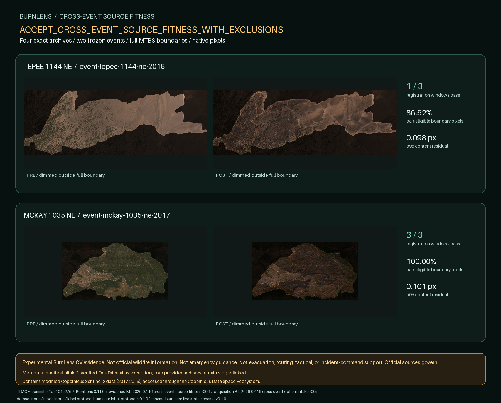

BURNLENS / PHASE TWO / SOURCE FITNESS
Cross-event native-pixel fitness
Experimental BurnLens CV evidence. Not official wildfire information. Not emergency guidance. Not evacuation, routing, tactical, or incident-command support. Official sources govern.

Decision
ACCEPT_CROSS_EVENT_SOURCE_FITNESS_WITH_EXCLUSIONS
Visual review: ACCEPT_CROSS_EVENT_SOURCE_FITNESS_WITH_EXCLUSIONS
Rendered JSON, HTML, and original-resolution PNG reviewed against the registered provider bytes and the fully content-verified two-link metadata-manifest exception. All four provider archives remain single-linked. Both full MTBS boundaries are visible with no gross pair misalignment. McKay is 100% pair-eligible and all three windows pass. Tepee preserves 5.1341% SCL-2 excluded and 8.3441% SCL-7 review pixels; W-01 remains excluded for insufficient eligible coverage, W-02 remains review-needed for cross-band consensus, and W-03 passes. Accept source fitness with those exclusions binding; no label, dataset, split, baseline, model, or application claim.
What was measured
- Full frozen MTBS source geometry; crop covers it outward and counts pixel centers inside it; no shrink.
- TCI 10 m is preview only. B04, B8A, B12, and SCL remain on their exact native EPSG:32610 20 m grids with no reprojection, resampling, or upsampling.
- SCL is quantified exactly inside the boundary and remains a quality aid, never truth.
- Independent B04/B8A/B12 reflectance gradients in deterministic event-scaled windows; Hann taper, phase-only cross-power, and localized 100x DFT refinement.
- Rectangular native-pixel windows may include context outside the irregular MTBS boundary only for correlation; quality fractions are computed only from boundary pixels and no outside pixel becomes evidence or a label.
TEPEE 1144 NE
event-tepee-1144-ne-2018 · scene-or4383912111420180907-789704b12eb7
Native product quality inside the full boundary
| Role | Sensing UTC | Eligible land | Review | Excluded |
|---|---|---|---|---|
tepee-2018-pre | 2018-08-11T19:12:15.299391Z | 99.9722% | 0.0093% | 0.0185% |
tepee-2018-post | 2018-09-20T19:12:13.124395Z | 86.5217% | 8.3441% | 5.1341% |
Pair-local registration
| Window | State | Reason | Residual |
|---|---|---|---|
W-01 | excluded | ELIGIBLE_FRACTION_BELOW_GATE | 0.0316 px |
W-02 | review-needed | BAND_CONSENSUS_EXCEEDS_GATE | 0.0361 px |
W-03 | pass | CONTENT_REGISTRATION_PASS | 0.1044 px |
MCKAY 1035 NE
event-mckay-1035-ne-2017 · scene-or4375212142520170829-fe36a9c858bd
Native product quality inside the full boundary
| Role | Sensing UTC | Eligible land | Review | Excluded |
|---|---|---|---|---|
mckay-2017-pre | 2017-07-29T19:02:25.781754Z | 100.0000% | 0.0000% | 0.0000% |
mckay-2017-post | 2017-09-27T19:02:20.822324Z | 100.0000% | 0.0000% | 0.0000% |
Pair-local registration
| Window | State | Reason | Residual |
|---|---|---|---|
W-01 | pass | CONTENT_REGISTRATION_PASS | 0.1030 px |
W-02 | pass | CONTENT_REGISTRATION_PASS | 0.0316 px |
W-03 | pass | CONTENT_REGISTRATION_PASS | 0.0806 px |
Interpretation boundary
No label pixels, dataset, split, baseline, model, or application may be claimed from this source-fitness checkpoint.
Contains modified Copernicus Sentinel-2 data (2017-2018), accessed through the Copernicus Data Space Ecosystem.
Registration metadata manifest: .burnlens-registration.json · link count 2. The OneDrive alias exception applies only to this fully content-verified metadata manifest; all four provider archives remain single-linked.
Trace: source commit cf1d9101e2760bf7d779b6fae68e605bb8809c1c · BurnLens 0.11.0 · evidence run BL-2026-07-16-cross-event-source-fitness-r006 · acquisition run BL-2026-07-16-cross-event-optical-intake-r005.
Dataset: none · baseline: none · model: none · application: none · label protocol: burn-scar-label-protocol-v0.1.0 · label schema: burn-scar-five-state-schema-v0.1.0.